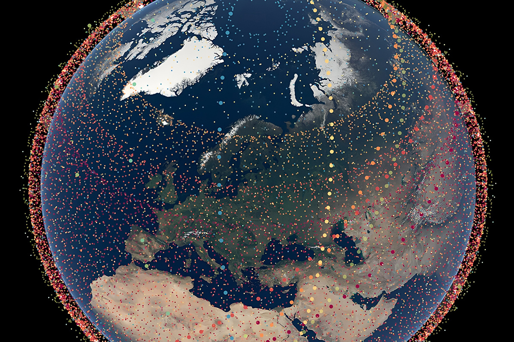
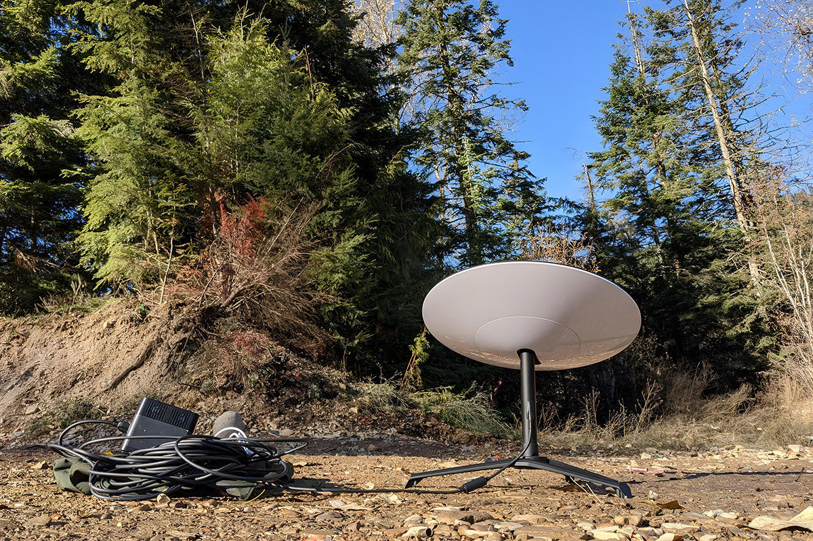

¿Qué tienen en común Elon Musk y Chile?
Además de su tienda Tesla en el Parque Arauco.
Además de su tienda Tesla en el Parque Arauco.

Leemos y escuchamos mucho del empresario Elon Musk. Su odisea al comprar Twitter y llamarlo X, su empresa Tesla con autos eléctricos, o sus diferentes hijos con nombres difíciles de pronunciar. En los últimos años, se ha hecho noticia por lanzar satélites al espacio y crear una red de internet global llamada Starlink.
El origen de Starlink se remonta al 2002, cuando Musk creó SpaceX, una empresa de exploración espacial con cohetes reutilizables, es decir, que no se descartaban después de cada misión. Para aprovechar estos lanzamientos, empezó a cuestionarse si debería producir su red de satélites.
El proyecto avanzó y en 2015 decidió usar su red para comenzar a ofrecer internet. Su primer lanzamiento fue el 23 de mayo de 2019, con 60 satélites que fueron enviados a la órbita terrestre. Actualmente, existen alrededor de 6.900 satélites de Starlink en órbita, según el astrónomo Jonathan McDowell.

Los satélites de Starlink forman una malla de internet que es capaz de ofrecer conexiones en cualquier parte del mundo. Es como una autopista de internet en el cielo, que logra conectar lugares donde antes no había conexión con internet de alta velocidad.
Funciona así: cuando alguien se conecta a Starlink, su antena manda la señal al satélite más cercano, que está a unos 550 km de altura. Ese satélite recibe la señal y la redirige a estaciones en la Tierra que están conectadas a internet por fibra óptica ultrarrápida. Luego, la información hace el camino de vuelta hasta la antena del usuario en milisegundos.
Eso sí, hay una condición: la antena del usuario y la estación terrestre no pueden estar a más de 800 km de distancia. Por eso, no todo el mundo puede acceder a Starlink, depende de dónde se encuentre.

En Chile, Starlink hizo noticia antes que en otros países: en 2021, nuestro país fue elegido como zona de pruebas de la tecnología. Se seleccionaron dos lugares que cumplían con las condiciones de ser aislados y no contar con internet tradicional: Caleta Sierra en la Región de Coquimbo y Sotomó en la Región de Los Lagos.
En Sotomó, la antena se instaló en la escuela John F. Kennedy y las pruebas fueron exitosas. El internet satelital que logró la comunidad obtuvo velocidades de casi 200 mb, casi idéntico a una conexión tradicional de WiFi. Por esas pruebas tempranas, Chile fue de los primeros países en Sudamérica en contar con la tecnología abierta al público.
Hoy, Starlink lleva casi cuatro años ofreciendo sus servicios en el país. Ya cuentan con tres modelos de antenas y diferentes planes de servicio que parten desde los 35.000 CLP mensuales. Al cierre de 2023, los clientes en Chile llegaban a 40.934, según cifras de la Subsecretaría de Telecomunicaciones (Subtel). La mayoría de estos clientes se encuentran en regiones y zonas aisladas y se espera que el número siga creciendo, especialmente ahora que empresas de telecomunicaciones han anunciado alianzas para ofrecerlo a sus clientes.
 Finanzas
FinanzasSi últimamente has abierto LinkedIn, probablemente lo has visto: parece que todos hablan del “futuro del trabajo”.
 Finanzas
FinanzasChile no está en el Mundial 2026. Ya lo sabemos, ya dolió, ya hicimos memes tristes y nos resignamos a ver la Copa del Mundo desde la casa.
 Finanzas
FinanzasHace casi dos años me vine a vivir a Italia y llegué con una idea muy instalada en la cabeza: que todo iba a ser mucho más caro que en…